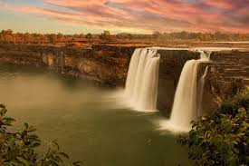
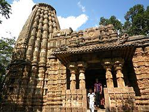
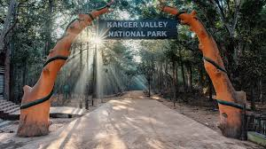
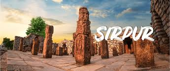
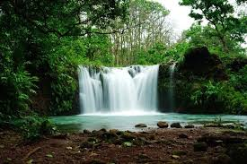

Chitrakote Falls

Often called 'The Niagara Falls of India', this is the widest waterfall in India, located on the Indravati River near Jagdalpur, offering a spectacular sight, especially during the monsoon.
Bhoramdeo Temple

An ancient Hindu temple complex dating back to the 7th-11th centuries, known for its intricate sculptures and architecture, often referred to as the 'Khajuraho of Chhattisgarh'.
Kanger Valley National Park

A national park known for its dense forests, diverse wildlife, and unique geological formations, including the famous Kutumsar Caves with impressive stalactites and stalagmites.
Sirpur

An archaeological site renowned for its extensive ancient monuments, including Buddhist viharas, Hindu temples, and Jain structures, highlighting the region's historical religious harmony.
Mainpat

A picturesque plateau known as the 'Shimla of Chhattisgarh', offering scenic beauty, waterfalls, and a settlement for Tibetan refugees, which adds a unique cultural dimension.